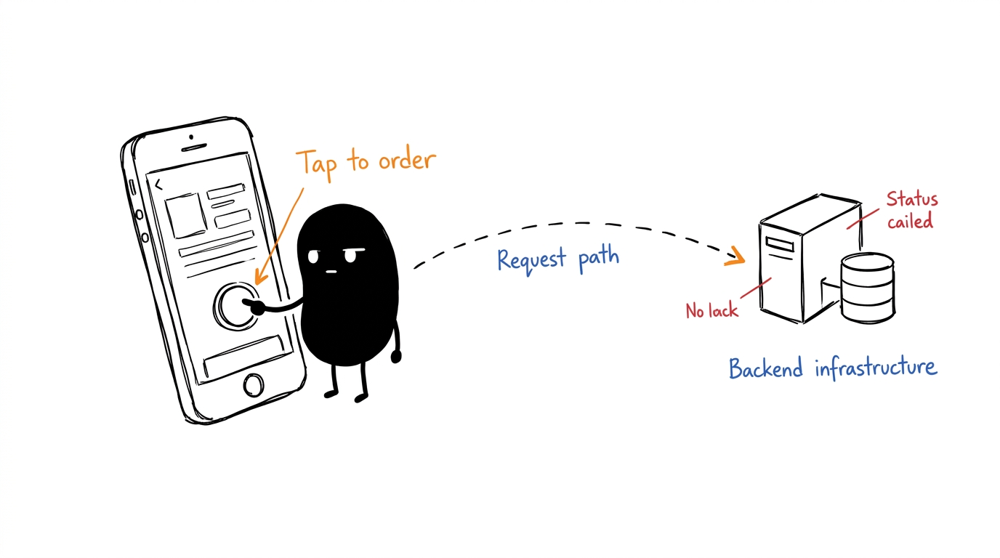
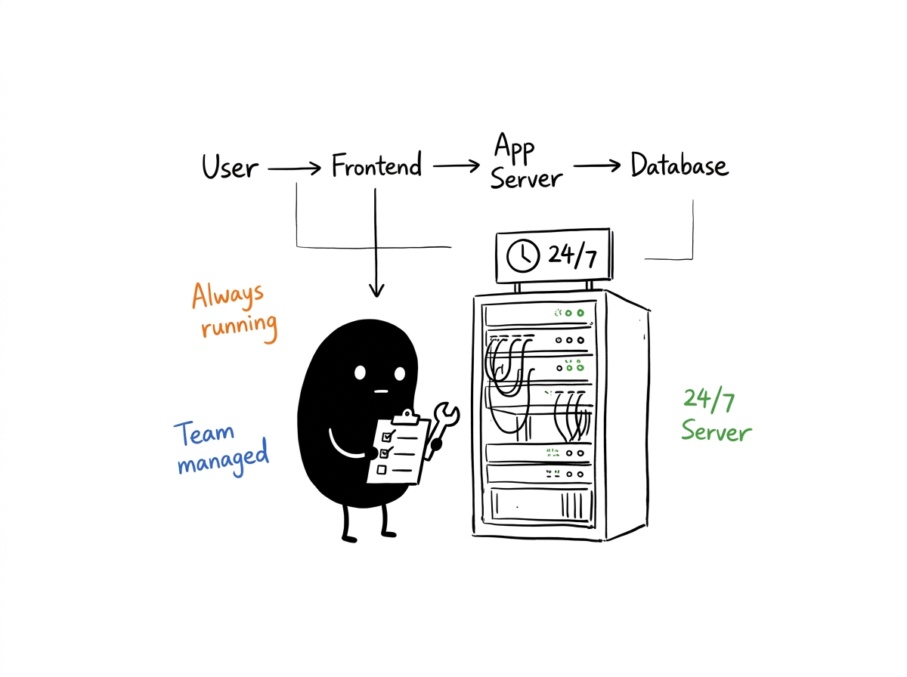
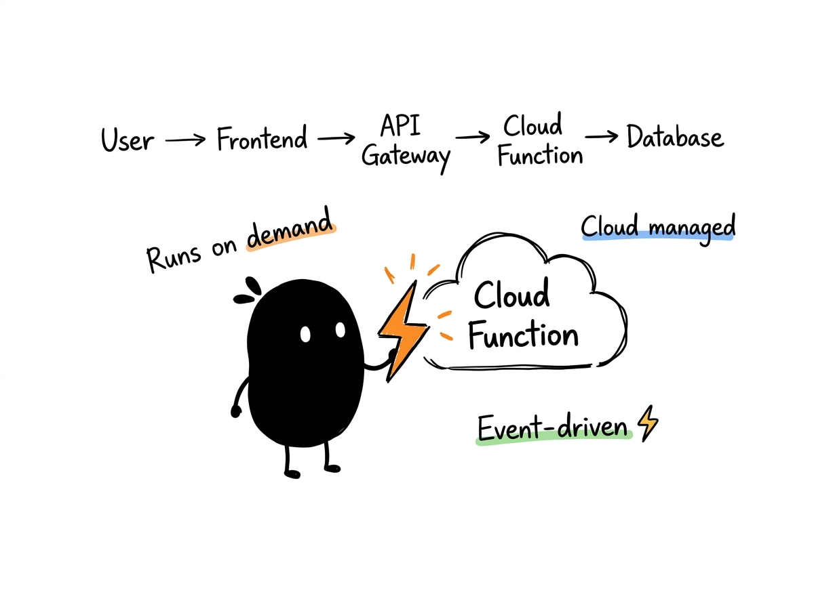
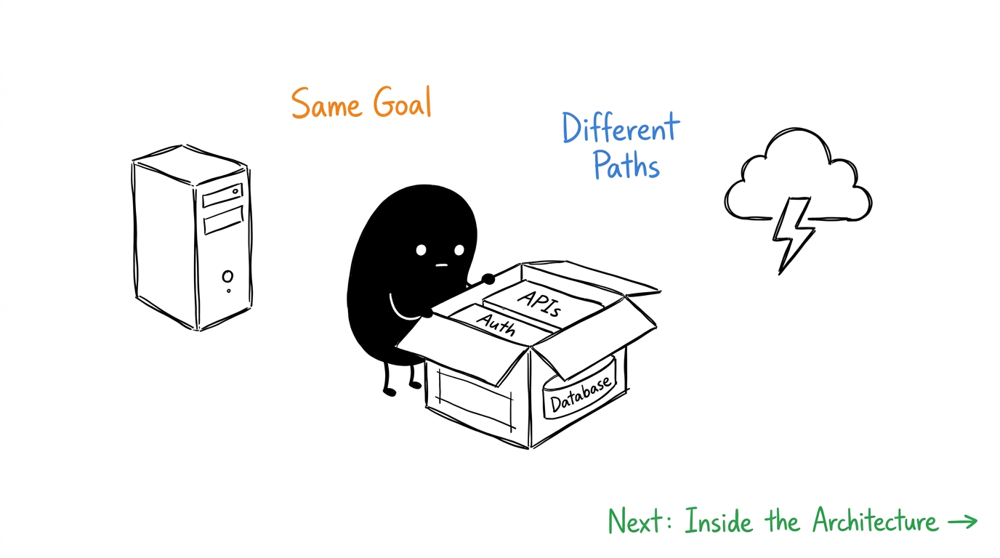

Scene 01 • Foundations
Every app has an architecture.
Let's see what happens behind the screen.

Scene 02 • Core Comparison
Two common approaches
How teams host and run their backend application code
A
Team-Managed
Server-based
Dedicated & constantly running
Running 24/7 • Team oversees hardware & OS
User
Frontend
App Server
Database
B
Cloud-Managed
Serverless
On-demand & event-driven
Runs only on trigger • Cloud manages infrastructure
User
Frontend
API Gateway
Cloud Func
Database
Scene 03 • Key Insight
Same goal. Different ways to run the backend.
Both patterns power modern applications worldwide.

Server-based
Full environment control, persistent in-memory state, predictable costs for steady traffic.
Serverless
Zero idle server cost, auto-scaling up to thousands of requests, cloud-managed resilience.
Next Section Preview
"Now, let's open one of these architectures and see what happens inside."